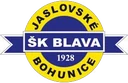
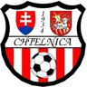

Posledný zápasU15 Starší žiaci

ŠK Blava 1928 U15domáci FC Bankahostia
FC BankahostiaVýsledok 2:2
Remízapolčas 0:1
Návrh webu · nie je to oficiálna stránka klubu
IV. liga U15 ObFZ Trnava, 6. miesto z 9
Posledný zápasU15 Starší žiaci

ŠK Blava 1928 U15domáciFC BankahostiaVýsledok 2:2
Remízapolčas 0:1
3–2–6výhry, remízy a prehry vo všetkých súťažiach, skóre 15:39
IV. liga U15 ObFZ Trnava
| # | Tím | Z | V | R | P | Skóre | B |
|---|---|---|---|---|---|---|---|
| 1 | 12 | 12 | 0 | 0 | 103:16 | 36 | |
| 2 | 12 | 11 | 0 | 1 | 81:15 | 33 | |
| 3 | 11 | 7 | 0 | 4 | 33:40 | 21 | |
| 4 | 11 | 5 | 1 | 5 | 33:30 | 16 | |
| 5 | 12 | 4 | 3 | 5 | 33:27 | 15 | |
| 6 | ŠPORTOVÉ KLUBY BLAVA 1928 | 11 | 3 | 2 | 6 | 15:39 | 11 |
| 7 | 12 | 3 | 1 | 8 | 21:52 | 10 | |
| 8 | 12 | 2 | 2 | 8 | 24:81 | 8 | |
| 9 |  TJ Družstevník Chtelnica | 11 | 0 | 1 | 10 | 7:50 | 1 |
Hráči, ktorí v kalendárnom roku 2026 nastúpili alebo boli v nominácii na zápas (podľa Sportnetu). Pri mládeži uvádzame len mená.